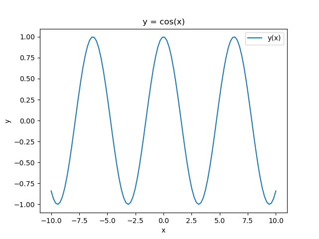
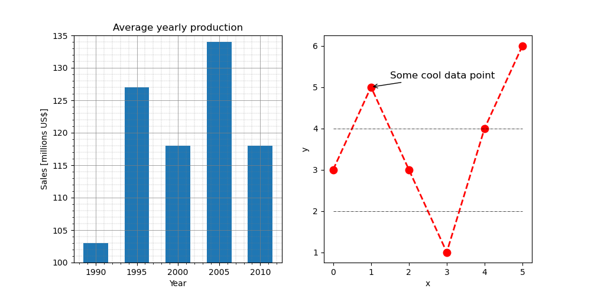

1. Python Basics#
This section introduces core Python syntax, data types, and control flow you’ll use throughout the course.
Hello World!#
The first program in any programming language is always the Hello, World! program. It is a simple program that outputs the text Hello, World! on the screen[1]:
In [1]: print("Hello, World!")
Hello, World!
Python as a calculator#
The Python interpreter directly executes expressions typed at the prompt, and can therefore be used as a simple calculator.
In [1]: 2+2
Out[1]: 4
The basic arithmetic operators are +, -, *, /, **, % and these are used in conjunction with brackets: (). The symbol ** is used to get exponents (powers): 2**4=16. The symbol % is the modulo operator. Operator precedence in Python follows standard arithmetic order and is defined as follows:
quantities in brackets
powers (\(**\))
\(*\), \(/\) working left to right
\(+\), \(-\) working left to right
For example,
In [2]: (2+3)*4/5**2
is performed in this sequence:
(2+3)= 5 \(\rightarrow\) 5 * 4 / 5**25**2= 25 \(\rightarrow\) 5 * 4 / 255*4= 20 \(\rightarrow\) 20 / 25
and the output is:
Out[2]: 0.8
Assignments (to variables)#
When performing calculations at the Python prompt, the results are displayed on the console. But what if we want to use that result in a subsequent calculation? Manually retyping the output isn’t efficient, especially for more complex code development. The solution is to capture the output for future use. This can be efficiently achieved by assigning the result to a variable:
In [1]: a = 3 - 2**4 # No output!
The result (\(-13\)) is assigned to the variable a. We can now use this variable for a subsequent operation:
In [2]: a * 5
Out[2]: -65
The value of a * 5 is output to the console. If we want to store this result as well, we need to use another variable:
In [3]: b = a * 5 # Again, no ouput!
We can now look at what variables we have:
In [4]: a
Out[4]: -13
In [5]: b
Out[5]: -65
In IPython / Jupyer Lab / Notebook, we can use the magic commands who and whos (or %who or %whos) to see what variables we have defined so far.
In [6]: whos
Variable Type Data/Info
----------------------------
a int -13
b int -65
We will discuss the Type of variables next.
Variable (or data) types#
We say that Python is a dynamically-typed language, because even though it is typed, we (mostly) do not need to explicitly state the type of a variable, as long as Python can infer it.
A (data) type determines:
the possible values for that type (integers, floating points, strings, booleans, …);
the operations that can be done on values of that type (e.g., arithmetic operations on numbers, concatenation for strings, …);
the way values of that type can be stored (32-bit vs. 64-bit floating points, …).
Most programming languages also allow the programmer to define additional data types (or classes), usually by combining multiple elements of other types and defining the valid operations of the new data type. We will discuss them later in the course.
Numbers#
In C++ (and C, Java, C#, and many others statically-typed languages), the following code would not compile:
a = 3;
Depending on the compiler, the error message would be something like this:
variables.cpp:3:2: error: 'a' was not declared in this scope
3 | a = 3;
| ^
Indeed, a = 3 is an assignment, and in statically-typed languages a variable can be assigned a value only after it has been declared.
int a; # Declare a variable of type int(eger)
a = 3; # Assign 3 to it
int b = 5; # This combines the two steps
In Python, this is legitimate:
In [1]: a = 3
The Python interpreter infers that 3 is an integer number, and creates a variable a that is of type int. We can test this a follows:
In [2]: type(a)
Out[2]: int
Integers are not the only type of numbers known to Python. Floating point numbers are numbers that contain floating decimal points[2]. For example, \(5.5\), \(-2.0\), \(1e-3\):
In [3]: b = 1.3
In [4]: type(b)
Out[4]: float
The division operator / has an alternative version // that forces the result of the division to be an integer (for partial back-compatibility with Python 2):
In [5]: 16 / 3
Out[5]: 5.333333333333333
In [6]: 16 // 3
Out[6]: 5
Strings#
Strings represents sequences of characters (i.e., text). A string can be defined in using single quotes '...' or double quotes "...", and can even be mixed:
In [1]: 'Do you like Python?' # Single quotes
Out[1]: 'Do you like Python?'
In [2]: "Of course!" # Double quotes
Out[1]: 'Of course!'
In [3]: "It's the best" # Using double quotes, we can have single quotes in the string!
Out[3]: "It's the best"
In [4]: 'It\'s the best' # We can also 'escape' the single quote
Out[4]: "It's the best"
Strings can be concatenated with the + operator:
In [5]: "Hello, " + "World!"
Out[5]: 'Hello, World!'
To concatenate strings and numbers, the number must be explicitly converted to string first:
In [6]: "I am " + str(27) + " years old!"
Out[6]: 'I am 27 years old!'
In recent versions of Python, f-strings were introduced to simplify and optimize this concatenations:
In [7]: age = 27
In [8]: f"I am {age} years old!" # Notice the leading 'f'
Out[8]: 'I am 27 years old!'
String literals can span multiple lines and they are delimited by """...""" or '''...'''. We will see examples of string literals when we discuss functions and their documentation.
Lists#
Lists are one of Python’s compound data types, that are used to group values together. A list is a sequence of comma-separated values (or items) between square brackets. These items may be of different type, though in practice this is rarely the case.
In [1]: squares = [1, 4, 9, 16, 25]
Lists (as all other sequence type, such as strings and tuples) can be indexed and sliced.
A list is indexed by passing an integer that represents the position of the value inside the list, with the first element of a list of n elements having index = 0 and the last element having index n - 1. A list can also be indexed from the end, with the last index being -1.
In [2]: squares[0]
Out[2]: 1
In [3]: squares[4]
Out[3]: 25
In [4]: squares[-1]
Out[4]: 25
A list is sliced by defining a start and an end index and optionally a step. Be aware that the start index is included, but the end index is excluded!
In [5]: squares[1:3] # Elements at indices 1 and 2
Out[5]: [4, 9]
In [6]: squares[1:5:2] # 1 to 5 (excluded) with a step of 2
Out[67]: [4, 16]
If indices are omitted, they will fall back to their default values: start = 0, stop = n, step = 1.
In [7]: squares[::2] # From 0 to 4 (included) with step 2
Out[7]: [1, 9, 25]
Lists can be modifies in several ways. Individual and slices of numbers can be replaced:
In [8]: squares[1] = 10 # -> [1, 10, 9, 16, 25]
In [9]: squares[2:5] = [50, 60, 70] # -> [1, 10, 50, 60, 70]
New numbers can be added to the list. The append(element) method adds the new element at the end of the list; the insert(position, element) adds the new element at the specified position.
In [10]: squares.append(100) # -> [1, 10, 50, 60, 70, 100]
In [11]: squares.insert(0, -1) # -> [-1, 1, 10, 50, 60, 70, 100]
In [12]: squares.insert(3, 25) # -> [-1, 1, 10, 25, 50, 60, 70, 100]
Lists can be concatenated with the \(+\) operator:
In [13]: a = [1, 2, 3]
In [14]: b = [4, 5, 6]
In [15]: a + b
Out[15]: [1, 2, 3, 4, 5, 6]
The built-in function len() returns the number of elements in the list.
In [16]: len(squares)
Out[16]: 8
Tuples#
Tuples are similar to lists, but are delimited by round brackets ( ... ) instead of square brackets. A tuple is an ordered and unchangeable collection of items. Once a tuple is defined, it cannot be changed anymore.
In [1]: fruits = ("apple", "pear", "orange", "banana")
In [2]: len(fruits)
Out[2]: 4
In [3]: fruits[2]
Out[3]: 'orange'
In [4]: fruits[2] = "grapes"
TypeError: 'tuple' object does not support item assignment
One common usage of tuples is for functions (see below) to return more than one output.
Dictionaries#
Dictionaries are used to store data values in key:value pairs. A dictionary is an ordered[3] collection of items (of any data type), that can be changed but that does not allow duplicates.
[1]: car = {
...: "brand": "Ford",
...: "model": "Mustang",
...: "year": 1964
...: }
...: # Hit the enter key one more time to execute!
In [2]: print(car)
{'brand': 'Ford', 'model': 'Mustang', 'year': 1964}
In [3]: car["year"] = 1967
In [4]: car["year"]
Out[4]: 1967
New keys can be added at any time:
In [5]: car["color"] = "red"
In [6]: car
Out[6]: {'brand': 'Ford', 'model': 'Mustang', 'year': 1964, 'color': 'red'}
key:value pairs can be removed from the dictionary with the del command.
In [7]: del car["brand"]
In [8]: car
Out[8]: {'model': 'Mustang', 'year': 1964, 'color': 'red'}
Keys and values can be queried with the keys() and values() methods, respectively. Later, we will see how to use these (and the items() method) to iterate over a dictionary:
In [9]: print(car.keys())
dict_keys(['model', 'year', 'color'])
In [10]: print(car.values())
dict_values(['Mustang', 1964, 'red'])
In [11]: print(car.items())
dict_items([('model', 'Mustang'), ('year', 1964), ('color', 'red')])
Code indentation#
Before moving on to more complex topics that require combinations of statements, we need to discuss a fundamental distinction between Python and most other programming languages. In Python, code formatting is not merely aesthetic, but it dictates the code’s structure itself! Consider this short C++ (sub)program:
for (int i=0; i<10; i++)
{
if (i == 5)
{
break;
}
}
Here, a block of code is encapsulated by curly braces { ... }. This code is completely equivalent to:
for(int i=0; i<10; i++){if(i == 5) {break;}}
Contrast this with the equivalent Python code:
for i in range(10):
if i == 5:
break
In Python, blocks are determined by the level of indentation! Lines indented by an equal number of spaces are part of the same block! Any deviation in formatting could disrupt the code’s functionality. While this makes Python’s code very clean, we have to be especially careful: altering the formatting could yield unpredictable (wrong!) behavior.
The two code snippets below have only one difference: the indentation of the delete_dir(dirname) line. Which of the two snippets behave as intuitively expected (A or B)? What does the other one do?
Notice: for your safety (and the safety of your data), the delete_dir() function does not exist.
# A
r = input(f"Delete directory '{dirname}' ?")
if r == "y":
print(f"Deleting directory '{dirname}'...")
delete_dir(dirname)
# B
r = input(f"Delete directory '{dirname}' ?")
if r == "y":
print(f"Deleting directory '{dirname}'...")
delete_dir(dirname)
Relational and logical operators#
A relational operator is a language construct or operator that tests or defines some kind of relation between two entities. These include numerical equality (e.g., 5 == 5) and inequality (e.g., 4 >= 3): the result of such a test is either True or False [4].
An expression created using a relational operator forms what is known as a relational expression or a condition. In Python, relational operators are == (equal to), != (not equal to), < (less than), > (greater than), <= (less than or equal to), >= (greater than or equal to).
In [1]: a = 5
In [2]: a > 3
Out[2]: True
The result of a relational expression is a variable of type bool (boolean) and its value can be either True or False (and nothing else).
A logical operator combines relational expressions in a way that again results in either a True or False result. Here we will consider the and, or and not operators, that operate on scalars.
In [3]: a > 3 and a % 2 == 0
Out[3]: False
While a (i.e., 5) is indeed larger than 3, it is not an even number and therefore the combined expression:
In [4]: a > 3 and a % 2 == 0
evaluates to False. The and and or operators are so-called short-circuit operators: they evaluate their second operand only when the result is not fully determined by the first operand. Short-circuit operators are handy in situations like the following:
In [5]: b = 0
In [6]: b != 0 and a / b > 0
Out[6]: False
If b is 0, a / b (i.e., a / 0) is never calculated[5].
A logical expression
A and B and C and ... and Z
is true only if all statements A, B, C, …, Z are true[6].
A logical expression
A or B or C or ... or Z
is true if at least one of its operands is true[7].
The not operator, produces a value of True if its operand is False and a value of False if its operand is True[8].
Conditional flow control: if, else#
Conditional statements enable selecting at run time which block of code to execute. The code path to run is chosen depending on the result of one or more logical operations. The simplest conditional statement is an if statement. For example:
In [1]: from random import randint # We will discuss modules later
In [2]: a = randint(1, 100) # Random integer between 1 and 100
In [3]: if a % 2 == 0:
...: print("a is even!")
If a is even, this code will output:
a is even!
Unfortunately, if a is odd nothing will be output. The keyword else comes to rescue:
In [4]: if a % 2 == 0:
...: print("a is even!")
...: else:
...: print("a is odd!")
Now all cases are covered. If statements can include any number of alternate choices using the keyword elif (else if):
In [5]: if a < 30:
...: print("small")
...: elif a < 80:
...: print("medium")
...: else:
...: print("large")
Notice that a = 20 would satisfy both the first and the second test, but Python exits the if block as soon as the first True condition is met.
Loop control: for, while, continue, break#
for loop#
A for loop is used for iterating over the items of any sequence (e.g., a list, a tuple, a dictionary, a set, a string, or a range):
for i in sequence:
statements
For example:
In [1]: fruits = ["apple", "banana", "cherry"]
In [2]: for f in fruits:
...: print(f)
apple
banana
cherry
To iterate over a sequence of numbers, the range() function can be used:
In [3]: for i in range(0, 5, 2): # From 0 (included) to 5 (excluded) with step 2
...: print(i)
0
2
4
for loops can be nested:
In [4]: for x in range(1, 4): # 1, 2, 3
...: for y in range(1, 3): # 1, 2
...: print(x + y)
The two nested loops above result in the following sequence of operations:
(x = 1) + (y = 1) = 2
(x = 1) + (y = 2) = 3
(x = 2) + (y = 1) = 3
(x = 2) + (y = 2) = 4
(x = 3) + (y = 1) = 4
(x = 3) + (y = 2) = 5
For each iteration of the external for loop, all iterations of the internal loop are executed.
Dictionaries can be iterated over in a series of ways:
In [5]: car = {
...: "brand": "Ford",
...: "model": "Mustang",
...: "year": 1964
...: }
In [6]: for key in car: # Iterates over the keys
...: print(key)
brand
model
year
In [7]: for key in car.keys(): # Again, iterates over the keys
...: print(key)
brand
model
year
In [8]: for value in car.values(): # Iterates over the values
...: print(value)
Ford
Mustang
1964
In [9]: for key, value in car.items(): # Iterates over the items (tuple!)
...: print(key, value)
brand Ford
model Mustang
year 1964
while loop#
The while loop repeats a group of statements an indefinite number of times under control of a logical condition. A while statement has following syntax:
while expression:
statements
As long as expression is True, the statements will be executed.
Example If we sum all integer numbers starting from n = 1, what is the first value of n for which the sum of all integers 1 + 2 + 3 + ... + n exceeds 100?
In [1]: n = 0
...: sum = 0
...: while sum <= 100: # As soon as this turns False, the block is
...: n = n + 1 # no longer executed!
...: sum = sum + n
...: print(n)
14
With n = 13, the sum is 91. With n = 14, the sum is 105, and is larger than 100 for the first time: the sum <= 100 expression returns False and the while loop is exited.
continue and break#
The continue operator passes control to the next iteration of the for or while loop in which it appears, skipping any remaining statements in the body of the loop. The same holds true for continue statements in nested loops. That is, execution continues at the beginning of the loop in which the continue statement was encountered.
In [1]: for x in range(6):
...: if x == 3:
...: continue
...: print(x)
0
1
2
4
5
The break statement lets you exit early from a for loop or while loop. In nested loops, break exits from the innermost loop only.
In [2]: for x in range(6):
...: if x == 3:
...: break
...: print(x)
0
1
2
Functions#
Functions are program routines that optionally accept input arguments, perform some computation, and optionally return output arguments.
Let’s define a simple function that returns the maximum of two numbers.
In [1]: def max(a, b):
...: """Returns the max of two numbers."""
...: if a >= b:
...: return a
...: else:
...: return b
The function definition is introduced by the keyword def, followed by the name of the function (max) and an optional list of input arguments (here a and b). Parentheses are mandatory, even if there are no input arguments. All the statements that belong to the function must be indented. The first statement of the function body can optionally be a string literal (delimited by """ ... """; this string literal is the function’s documentation string, or docstring [9].
A function can return one or more output arguments using the keyword return.
In [2]: c = max(5, 7)
In [3]: c
Out[3]: 7
Types of function arguments#
In Python, the arguments of a function can be divided into several categories: required, positional, optional with default values, and keyword arguments. The slightly confusing aspect of this argument classification is that the type of an argument is determined not only by its definition in the function signature, but (mostly) by how it is used in the function call[10].
For instance, consider the following fun_with_args function:
In [4]: def fun_with_args(a, b=10, c=20):
...: """Function to explain the possible argument types."""
...: return a + b + c
Positional arguments#
If the function fun_with_args is called without specifying the names of the arguments, the parameters are positional.
In [5]: fun_with_args(1, 2, 3) # a=1, b=2, c=3
All parameters are determined by their respective positions in the function call.
Keyword arguments#
If we explicitly specify the argument names, the parameters become keyword parameters.
In [6]: fun_with_args(a=1, b=2, c=3) # a=1, b=2, c=3
Arguments with default values#
We can omit arguments that have a default values assigned to them.
In [7]: fun_with_args(1) # a=1, b=10 (default), c=20 (default)
Mixed#
Finally, we can combine everything.
In [8]: fun_with_args(1, c=3) # a=1, b=10 (default), c=3
Here, a is a required argument filled positionally, c is a keyword argument, and b is left at its default value. Note that when using both positional and keyword arguments in a function call, all positional arguments must come before any keyword arguments.
In [9]: fun_with_args(c=3, b=2, 1) # ERROR!
fun_with_args(c=3, b=2, 1)
^
SyntaxError: positional argument follows keyword argument
In the previous call, it is not clear to which parameter the value 1 should be assigned: since it is not explicitly named, it is expected to be filled positionally, but it is passed in the wrong place.
In summary, the classification of an argument as required, positional, having a default value, or being a keyword argument is largely determined by how the function is called, not solely by how its parameters are defined.
Python modules and packages#
Python offers modules and packages to break down large programs into manageable, reusable parts.
Modules#
In Python, a module serves as a container for code that can be reused across various programs. A module can be either built-in, part of Python’s standard library, or user-defined, that is created by individual developers. Regardless of its origin, a module becomes accessible in your program through the import statement. For instance, we can import a my_module module as follows:
import my_module
Module search path#
When we import a module, Python looks for it in several locations:
The directory where the script runs or the current directory in an interactive session (e.g., Python or IPython).
Directories listed in the
PYTHONPATHenvironment variable.Installation-dependent directories or local virtual environments.
Interacting with a module#
Assuming we wrote a module named my_module.py with various definitions:
# my_module.py
s = "This is a string from my_module."
a = [0, 1, 2, 3]
def my_fun(arg):
print(arg)
class My_Class:
def __init__(self, id=1):
self.id = id
print(self.id)
we can interact with it as follows:
# IPython started from /home/aaron
In [1]: import my_module
In [2]: my_module
Out[2]: <module 'my_module' from '/home/username/my_module.py'>
In [3]: my_module.s
Out[3]: 'This is a string from my_module.'
In [4]: my_module.a
Out[4]: [0, 1, 2, 3]
In [5]: my_module.my_fun(10)
Out[5]: 10
In [6]: m = my_module.My_Class()
Out[6]: 1
Notice how we prepend the module name to the objects that it contains. Indeed, the following call fails:
In [7]: m = My_Class()
NameError: name 'My_Class' is not defined
Namespace isolation#
When imported, the objects from a module reside in their own namespace, thus avoiding any naming conflicts. It is indeed a good (defensive) programming strategy to import modules and target their contents with the module.attribute syntax. However, it is possible to import objects directly into the caller’s namespace as follows:
In [8]: from my_module import my_fun, My_Class
In [9]: my_fun(12)
Out[9]: 12
Caution: overwriting namespace#
Be cautious, as importing objects directly into the caller’s namespace can overwrite existing objects.
In [10]: s = "This is the variable s in the base namespace."
In [11]: s
Out[11]: 'This is the variable s in the base namespace.'
In [12]: from my_module import s
In [13]: s
Out[13]: 'This is a string from my_module.'
To import everything from a module, use:
In [14]: from my_module import *
Use this with care. Some modules are quite extensive and will add a lot of names into the namespace (with the risk of name collision). Also, importing many unneeded objects will take time and use up memory unnecessarily.
Aliasing#
It is also possible to import objects with alternate names (aliases):
In [15]: from my_module import My_Class as MC
In [16]: import my_module as mmod
Essential third-party libraries#
NumPy#
NumPy (https://numpy.org) adds support for high-performance multi-dimensional arrays to Python, along with a large collection of high-level mathematical functions to operate on these arrays. NumPy is open-source software and has many contributors. Almost all scientific libraries for Python use NumPy arrays as their back-end data structure, rendering them all fully compatible with each other. The QuickStart tutorial (https://numpy.org/doc/stable/user/quickstart.html) gently introduces the fundamental aspects of NumPy. Here, we will look at some of those basics.
First of all, NumPy must be imported into Python. It is convention to import is with an alias, np.
In [1]: import numpy as np
There are many ways to create NumPy[11] arrays.
# From Python lists
In [2]: a = np.array([1, 2, 3, 4, 5, 6]) # 1D array
In [3]: a
Out[3]: array([1, 2, 3, 4, 5, 6])
In [4]: b = np.array([[1, 2, 3], [4, 5, 6]]) # 2D array
In [5]: b
Out[5]:
array([[1, 2, 3],
[4, 5, 6]])
# Specifying the final dimensions (shape), type and filling value
In [6]: c = np.zeros((3, 2, 4), dtype=np.float64) # 3D array (z, y, x)
In [7]: c
Out[7]:
array([[[0., 0., 0., 0.],
[0., 0., 0., 0.]],
[[0., 0., 0., 0.],
[0., 0., 0., 0.]],
[[0., 0., 0., 0.],
[0., 0., 0., 0.]]])
In [8]: c = np.ones((1, 2), dtype=int) # 1 row, 2 columns
In [9]: c
Out[9]:
array([[1, 1]])
# Using specific distributions
In [10]: n = np.random.randn(1000) # Normal distribution N(0, 1)
NumPy arrays have many operations associated to them. For instance, we can calculate mean and standard deviation of the n array above like this:
In [11]: n.mean()
Out[11]: -0.007093885346150171 # Close to the expected value 0.0
In [12]: n.std()
Out[12]: 0.9869874098207414 # Close to the expected value 1.0
Indexing and slicing NumPy arrays works as with standard Python arrays:
In [13]: a = np.arange(5, 11)
In [14]: a
Out[14]: array([5, 6, 7, 8, 9, 10])
In [15]: a[0]
Out[15]: 5
In [16]: a[-1] # Last element in the array
Out[16]: 10
In [17]: a[::2] # From beginning to end with step 2
Out[17]: array([5, 7, 9])
In [18]: a[::-1] # Cool way to reverse an array
Out[18]: array([10, 9, 8, 7, 6, 5])
Arithmetic operations on NumPy array are applied element-wise:
In [19]: a = np.array([1, 2, 3])
In [20]: b = np.array([4, 5, 6])
In [21]: a * b
Out[21]: array([ 4, 10, 18])
Matrix multiplications are possible using the operator @. For a matrix multiplication we need a to be of shape (3, 1) and b to be (1, 3): a @ b results in 3, 3 matrix (outer product). Alternatively, if a is (1, 3) and b is (3, 1), the result is a scalar ((1, 1)) and the operation reduces to the dot product of the two vectors.
In [22]: a.reshape((3, 1)) @ b.reshape((1, 3))
Out[22]:
array([[ 4, 5, 6],
[ 8, 10, 12],
[12, 15, 18]])
In [23]: a.reshape((1, 3)) @ b.reshape((3, 1))
Out[23]: array([[32]])
Finding elements in arrays is possible using the where() function. Let’s create a small 1D vector a to work with:
In [24]: a = np.arange(11, 20)
In [25]: a
Out[25]: array([11, 12, 13, 14, 15, 16, 17, 18, 19])
Let’s find the indices of the elements of a that satisfiy some simple condition:
In [26]: indices, = np.where(a > 15) # Returns a tuple x, y
In [27]: indices
Out[27]: array([5, 6, 7, 8])
# Let's check
In [28]: a[indices]
Out[28]: array([16, 17, 18, 19]) # Indeed, all > 15!
Notice that np.where returns a tuple of indices for each dimension of the array. If the array is 1D, only one vector if indices is returned, but still packed in a tuple!
We can also combine logical expressions[12]:
In [29]: indices, = np.where((a > 13) & (a <= 15))
In [30]: indices
Out[30]: array([3, 4])
# Let's check
In [31]: a[indices]
Out[31]: array([14, 15]) # Indeed, 13<a[indices]<=15!
np.where also works in 2D and beyond.
In [32]: b = np.arange(1, 17).reshape(4, 4)
In [33]: b
Out[33]:
array([[ 1, 2, 3, 4],
[ 5, 6, 7, 8],
[ 9, 10, 11, 12],
[13, 14, 15, 16]])
# Find some values
In [34]: indices = np.where((b > 12) & (b < 15))
In [35]: indices
Out[35]: (array([3, 3]), array([0, 1]))
# The values that satisfy the conditions are (3, 0) and (3, 1)
In [36]: b[indices]
Out[36]: array([13, 14]) # Indeed, 12<b[indices]<15!
Logical indexing can also be used to select subsets of NumPy arrays:
In [37]: a >= 16
Out[37]: array([False, False, False, False, False, True, True, True, True])
We can directly use a boolean array to select elements from another array. Implicitly, the values of the array at the indices that correspond to the indices of the True values in the boolean array are used:
In [38]: a[a >= 16]
Out [38]: array([16, 17, 18, 19])
Pandas#
pandas (https://pandas.pydata.org) is a library for Python for data manipulation and analysis. In particular, it offers data structures and operations for manipulating numerical tables and time series.
First of all, pandas must be imported into Python. It is convention to import is with an alias, pd.
In [1]: import pandas as pd
Important data structures in pandas are DataFrame and Series. A DataFrame consists of one or more Series.
In [2]: s = pd.Series([1, 3, 5, np.nan, 6, 8])
In [3]: s
Out[3]:
0 1.0
1 3.0
2 5.0
3 NaN
4 6.0
5 8.0
dtype: float64
Every value in a Series has an index associated to it (the numbers 0 to 5 on the left of the Series values above). NaN indicates a missing value.
A DataFrame consists of one or more Series organized in columns, with an index associated to them (not necessarily numeric).
In [4]: dates = pd.date_range("20210901", periods=6)
In [5]: dates
Out[5]:
DatetimeIndex(['2021-09-01', '2021-09-02', '2021-09-03', '2021-09-04',
'2021-09-05', '2021-09-06'],
dtype='datetime64[ns]', freq='D')
In [6]: df = pd.DataFrame(np.random.randn(6, 4), index=dates, columns=["A", "B", "C", "D"])
In [7]: df
Out[7]:
A B C D
2021-09-01 -1.896984 -0.784408 -0.176049 0.678751
2021-09-02 0.036235 0.934565 -0.929419 0.511440
2021-09-03 0.308496 1.357357 0.422399 -1.228895
2021-09-04 -0.978040 0.555728 -1.982682 -0.289128
2021-09-05 -0.599076 1.144799 -1.416163 0.469280
2021-09-06 -0.462621 2.194998 0.596607 -1.163095
Often, a DataFrame is imported into pandas from a text file, an Excel datasheet, a MySQL database, or an URL.
In [8]: df = pd.read_csv("iris.csv", sep=",")
In [9]: df.columns
Out[9]:
Index(['sepal length (cm)', 'sepal width (cm)', 'petal length (cm)',
'petal width (cm)', 'species'],
dtype='object')
In [10]: df.columns = ['SL', 'SW', 'PL', 'PW', 'S'] # Save some space
In [11]: df.head() # Show the first 5 rows
Out[11]:
SL SW PL PW S
0 5.1 3.5 1.4 0.2 setosa
1 4.9 3.0 1.4 0.2 setosa
2 4.7 3.2 1.3 0.2 setosa
3 4.6 3.1 1.5 0.2 setosa
4 5.0 3.6 1.4 0.2 setosa
In [12]: df.describe() # Summmarize the dataframe (only numeric fields)
Out[12]:
SL SW PL PW
count 150.000000 150.000000 150.000000 150.000000
mean 5.843333 3.057333 3.758000 1.199333
std 0.828066 0.435866 1.765298 0.762238
min 4.300000 2.000000 1.000000 0.100000
25% 5.100000 2.800000 1.600000 0.300000
50% 5.800000 3.000000 4.350000 1.300000
75% 6.400000 3.300000 5.100000 1.800000
max 7.900000 4.400000 6.900000 2.500000
We can access subsets of a DataFrames in a series of ways.
In [13]: df["SL"] # Get the full column (Series) "SL"
Out[13]:
0 5.1
1 4.9
2 4.7
3 4.6
4 5.0
...
145 6.7
146 6.3
147 6.5
148 6.2
149 5.9
Name: SL, Length: 150, dtype: float64
df["SL"][:5] # Get the first 5 rows of "SL"
Out[11]:
0 5.1
1 4.9
2 4.7
3 4.6
4 5.0
Name: SL, dtype: float64
In [14]: df[df["S"] == "versicolor"][["SL", "SW"]][:5] # First 5 versicolors, SL and SW
Out[14]:
SL SW
50 7.0 3.2
51 6.4 3.2
52 6.9 3.1
53 5.5 2.3
54 6.5 2.8
To update cells in place, one can use the loc method.
In [15]: df.loc[df["S"] == "setosa", "S"] = "iris setosa"
In [16]: df.head()
Out[16]:
SL SW PL PW S
0 5.1 3.5 1.4 0.2 iris setosa
1 4.9 3.0 1.4 0.2 iris setosa
2 4.7 3.2 1.3 0.2 iris setosa
3 4.6 3.1 1.5 0.2 iris setosa
4 5.0 3.6 1.4 0.2 iris setosa
In contrast, the method iloc uses the index value to target the cells.
In [17]: df.iloc[1, 0] = 100
In [18]: df.head()
Out[18]:
SL SW PL PW S
0 5.1 3.5 1.4 0.2 iris setosa
1 100.0 3.0 1.4 0.2 iris setosa
2 4.7 3.2 1.3 0.2 iris setosa
3 4.6 3.1 1.5 0.2 iris setosa
4 5.0 3.6 1.4 0.2 iris setosa
To convert a Series object to a NumPy array, one can use the values() method of the Series object.
In [19]: n = df["PL"].values
In [20]: n
Out[20]: array([1.4, 1.4, 1.3, 1.5, 1.4, 1.7, ...]) # Cut to save space
In [21]: type(n)
Out[21]: numpy.ndarray
A very handy functionality of Pandas is the possibility to group elements of a DataFrame by one or more columns. Before we do that, let’s restore the original value of the iris setosa element we modified above:
In [22]: df.iloc[1, 0] = 4.9 # Let's restore the original value
As an example, we can now use the DataFrame method groupby to group all entries by species, using the S column:
In [23]: df_by_species = df.groupby("S")
Now our queries will not relate to individual entries, but to the groups:
In [24]: df_by_species.describe()
Out[24]:
SL SW
count mean std min 25% 50% 75% max count ...
S
iris setosa 50.0 5.006 0.352490 4.3 4.800 5.0 5.2 5.8 50.0 ...
verginica 50.0 6.588 0.635880 4.9 6.225 6.5 6.9 7.9 50.0 ...
versicolor 50.0 5.936 0.516171 4.9 5.600 5.9 6.3 7.0 50.0 ...
[3 rows x 32 columns]
In [25]: df_by_species["SL"].mean()
Out[25]:
S
iris setosa 5.006
verginica 6.588
versicolor 5.936
Name: SL, dtype: float64
We can also iterate over the subsets of the DataFrame that belong to each group:
In [26]: for species, frame in df.groupby("S"):
...: print(f"{species}\n{frame.head(3)}")
iris setosa
SL SW PL PW S
0 5.1 3.5 1.4 0.2 setosa
1 4.9 3.0 1.4 0.2 setosa
2 4.7 3.2 1.3 0.2 setosa
verginica
SL SW PL PW S
100 6.3 3.3 6.0 2.5 verginica
101 5.8 2.7 5.1 1.9 verginica
102 7.1 3.0 5.9 2.1 verginica
versicolor
SL SW PL PW S
50 7.0 3.2 4.7 1.4 versicolor
51 6.4 3.2 4.5 1.5 versicolor
52 6.9 3.1 4.9 1.5 versicolor
Finally, to write a DataFrame object to a .csv file, we can use the DataFrame.to_csv() method:
In [25]: df.to_csv("filename.csv", index=False)
By default, to_csv() will save the DataFrame’s index as an additional column to the .csv file. In most cases, however, this behavior is not necessary and can be disabled by passing the argument index=False to the function. Please note that DataFrameGroupBy objects created by the .groupby() method (such as df_by_species above) cannot be directly saved using to_csv().
Matplotlib#
Matplotlib (https://matplotlib.org/) is a (large) plotting library for Python that can create publication-quality figures. The gallery (https://matplotlib.org/stable/gallery/index.html) gives a nice overview of the types of plots that can be generated with Matplotlib.
We usually import Matplotlib as follows:
In [1]: import matplotlib.pyplot as plt
The simplest way to create a plot is as follows:
# plot_simply.py
# Prepare the data
x = np.linspace(-10, 10, 100) # import numpy as np, first
y = np.cos(x)
# Plot
plt.plot(x, y, label='y(x)')
# Add axes labels
plt.xlabel("x")
plt.ylabel("y")
# Add title
plt.title("y = cos(x)")
# Add legend
plt.legend(loc="best")
# Show (this is not necessary in a Jupyter notebook)
plt.show()
{kind=link}

If we want better control on the elements of our plots, we can switch to a more object-oriented use of Matplotlib. In particular, we can create a Figure with one or more sets of axes and then explicitly target them.
fig = plt.figure(figsize=(20,10))
ax1 = fig.add_subplot(1, 2, 1) # 1 row, 2 columns, 1st subplot
ax2 = fig.add_subplot(1, 2, 2) # 1 row, 2 columns, 2nd subplot
Alternatively, we can combine the calls:
fig, ax = plt.subplots(1, 2, figsize=(20,10))
ax1, ax2 = ax # Extract the axes
Now we can plot data and change the axes individually:
# plot_complex.py
import matplotlib
fig, ax = plt.subplots(1, 2, figsize=(10,5))
ax1, ax2 = ax
ax1.bar([1990, 1995, 2000, 2005, 2010],
[103, 127, 118, 134, 118],
width=3)
ax1.set_ylim((100, 135))
ax1.set_title("Average yearly production")
ax1.grid(True, which='major', color='gray',
linestyle='-', linewidth=0.5)
ax1.minorticks_on()
ax1.grid(True, which='minor', color='gray',
linestyle='--', linewidth=0.2)
ax1.set_xlabel("Year")
ax1.set_ylabel("Sales [millions US$]")
ax2.plot([0, 1, 2, 3, 4, 5], [3, 5, 3, 1, 4, 6],
color="r", linestyle='--', linewidth=2,
marker='.', markersize=18)
ax2.add_line(
matplotlib.lines.Line2D((0, 5), (4, 4),
linestyle='-.',
linewidth=0.5,
color="black"))
ax2.add_line(
matplotlib.lines.Line2D((0, 5), (2, 2),
linestyle='-.',
linewidth=0.5,
color="black"))
ax2.set_xlabel("x")
ax2.set_ylabel("y")
ax2.annotate("Some cool data point",
xy=(1.0, 5.0),
xytext=(1.5, 5.2),
arrowprops={"arrowstyle": "->"},
fontsize=12)
{kind=link}

In the second plot of the previous figure, we added three distinct lines to the same set of axes. We can do this by first creating a new matplotlib.lines.Line2D object line, and then add it to the axes with ax.add_line(line).
Finally, to save a figure to file, one can use:
# Current, active figure
plt.savefig("/path/to/figure.png", dpi=100)
# Specific figure
fig.savefig("/path/to/figure.png", dpi=100)
The function savefig takes many parameters, as explained on https://matplotlib.org/stable/api/_as_gen/matplotlib.pyplot.savefig.html. In particular, dpi allows to increase the resolution of the plot for higher-quality figures that can be submitted for publication. Also, either specifying the format argument or just by setting the correct extension to the file name fname, one can switch from image formats (such as png or jpg) to vector graphics formats such as svg (that can be edited in publishing software such as Adobe Illustrator).
Backends#
Matplotlib will render its plots using different backends depending on where it is called from. In Jupyter notebooks, plots are rendered directly in the notebook whenever a cell containing Matplotlib calls is executed. The backend in Jupyter notebooks can also be set explicitly with the %matplotlib magic word: %matlotlib inline displays the plots right after the executed cells.
If other backends are used, an explicit plt.show() call may be needed to display the generated plot (e.g., if a window must be opened). A complete list of backends can be found here: https://matplotlib.org/stable/api/index_backend_api.html. Depending on where Python is installed, a proper backend is usually configured; changing backends usually requires third-party libraries to be installed. The backend is changed by calling:
import matplotlib
matplotlib.use('TkAgg') # Or any of the other backends
before any plots are created.